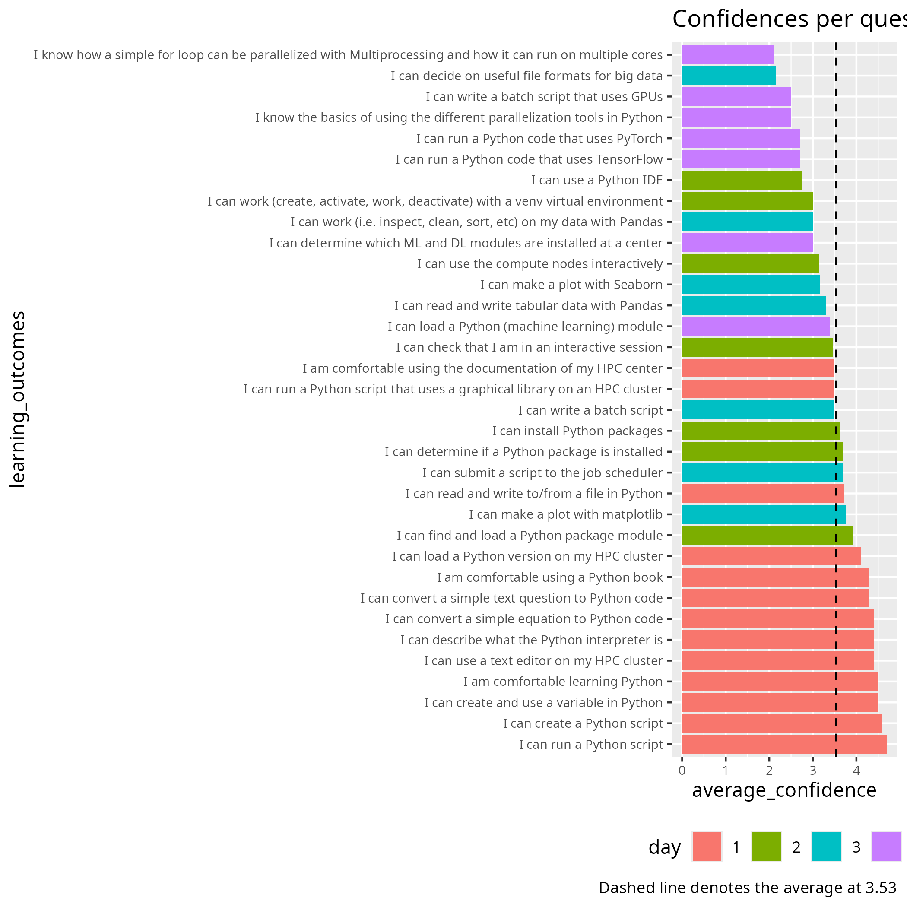
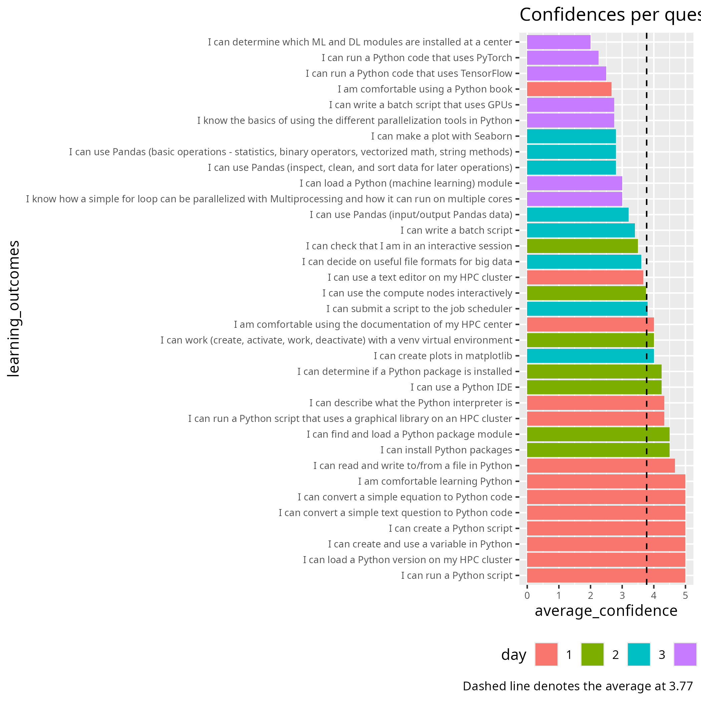

Whole course
Days 1-4
Dates: 2026-04-20, 2026-04-22, 2026-04-23, 2026-04-24
Author: Richel
Self-rated confidence again proves useless
The average confidences per course, colored by course day:

There is a trend that self-rated confidence is highest at day 1 and then goes most down. I am unhappy about the confidences of day 3 of my sessions and I will remove the optional learning outcome from the evaluation.
Let’s compare to the previous course:

From that, I see no obvious difference.
To me, this again shows that the self-assessed confidences are unrelated
to course quality (e.g. the review paper [Yates et al., 2022],
where no relation is claimed between self-assessment
and the actual skill being taught,
hence being used to assess teaching).
Other feedback
I have already reflected on feedback from day 3.
Here I add the feedback from other days that is relevant to me:
Day 2
I didn’t like the way in which they have taught during day 2.
big step up from day 1
Proper instructions and more time for breakout rooms where we can talk to an instructor for help…
A big difference from day 1. Sorry, but it needs to be improved a lot
Day 2 was much more disorganised and less pedagogical than day 1.
Days 1 and 2 are different. Some of these mention a preference for day 1.
Day 4
Overall, [the pace] is OK, but it may be too fast for beginners, even though it is meant to be an introduction.
Overall, while I think that the course has some good parts and some teachers were very good and pedagogical, the course still goes too fast for the most part, assumes that attendees know more prerequisites than they actually need in order to attend, and several of the teachers need to improve their teaching skills.
Teachers were all good, although Richèl stood out (positively).
I think the course has potential, but it could benefit from more interaction with the students.
Finally, I would suggest removing the section on how to connect to the HPC clusters. Since this is a course about Python and Python in HPC clusters, connecting to the cluster should be a prerequisite; alternatively, it could be sent as a pre-course exercise before the program starts. The course should remain focused on Python and its application within HPC clusters.
Richel should have more advanced material, we are smarter than he thinks.
Here seems to be some topics:
Q1: Who is the course aimed at: beginners of more experienced users?
Q2: Which prerequisites does the course have and do we not teach what is assumed in those prerequisites?
Q3: How much Python should we teach (i.e. beyond HPC Python)?
My answers:
A1: I follow the pace of the learners. This means I am beginner-friendly.
A2: I am quite strict in what I do teach and I do assume the prerequisites being fulfilled
A3: As minimal as possible: the goal is to get things to work in an HPC environment
Listen to feedback from learners
My question:
Should we listen to feedback from the learners when they recommend practice that are opposite of what the literature states?
My answer:
No. When we know that an advice goes against the literature, we should follow the literature instead. Would we be in doubt, then checking the literature is a great next step.
Actually listen to feedback from learners
Here is some feedback from the May 2023 evaluations:
Please be prepared and make it more hands-on.
More exercises for us to try
More exercises all over
more time for code-along and on-your-own to try it
longer time to do the exercises
This means already since May 2023 the learners ask for more time for exercises. Are they really being listened to? Or is this a matter of teaching practice that states that lecturing is better than exercises?
Listen to feedback from teachers
There has never been a teacher giving proper feedback about the course. I would like that.
I have had an observer this course for Day 1. It helped me grow.
My conclusion
The course has many different teachers, with different ideas about what good teaching is. That is fine, as we do our own thing in our lessons. This does make it less useful to evaluate as a team. Me, I see no use of this, but I will observe how that goes.
My observations from evaluation
As far as I interpret it, all suggestions were ignored, except adding an extra day. To me, this again confirms my feeling that I feel we do not need to bother our learners with evaluations, as we do not listen to them anyways.
This does match with some of the literature, for example:
There is, therefore, no evidence that the use of the questionnaire was making any contribution to improving the overall quality of teaching and learning of the departments, at least as perceived by the students
[Kember et al., 2002]
On the other hand, this example survey (PDF), which is discussed at a page dedicated to student feedback at the university of Minnesota’s ‘Teaching for Learning Center’. seems to have some literature behind it:
The class was clearly organized
I knew what was expected of me in this class
I received feedback on class assignments that was helpful
The instructor encouraged students to play an active role in the class
The instructor prompted students to ask questions
I was encouraged to communicate with my instructor outside of class
I had opportunities to solve problems in this class
The class allowed me to think creatively about issues in the field
I can apply knowledge and information from this class to my life
This class has helped me develop the skills necessary to work effectively with people from various backgrounds
My instructor saw cultural and personal differences as assets
My instructor respected the expression of diverse ideas
The instructor effectively facilitated interactions among students
In-class activities and/or interactions with classmates contributed to my learning.
Would you recommend this class to other students regarding…?
class content
class structure (e.g., organization, pacing)
positive learning environment
instructor’s teaching skill/style
fairness of grading
While searching for a quickscan to assess course quality, I found
[Joosten and Cusatis] with the following top 3 strongest predictors
of learning: (1) course organisation, (2) student support, (3) student
interaction with the instructor. Also from that paper:
It is important here to note that content had the least statistical impact within the model.
There is a rubric shown to work in online course environments
at [Foster et al., 2014], where these weights are used:
Part |
Weight |
|---|---|
Content |
30% |
Design and learning objectives |
30% |
Interactivity |
20% |
Usability |
20% |
References
[Joosten and Cusatis]Joosten, Tanya, and Rachel Cusatis. “A Cross-Institutional Study of Instructional Characteristics and Student Outcomes: Are Quality Indicators of Online Courses Able to Predict Student Success?.” Online Learning 23.4 (2019): 354-378.[Kember et al., 2002]Kember, David, Doris YP Leung, and KyP Kwan. “Does the use of student feedback questionnaires improve the overall quality of teaching?.” Assessment & Evaluation in Higher Education 27.5 (2002): 411-425.[Yates et al., 2022]Yates, Natasha, Suzanne Gough, and Victoria Brazil. “Self-assessment: with all its limitations, why are we still measuring and teaching it? Lessons from a scoping review.” Medical Teacher 44.11 (2022): 1296-1302.[Foster et al., 2014]Foster, Margaret J., Suzanne Shurtz, and Catherine Pepper. “Evaluation of best practices in the design of online evidence-based practice instructional modules.” Journal of the Medical Library Association: JMLA 102.1 (2014): 31.